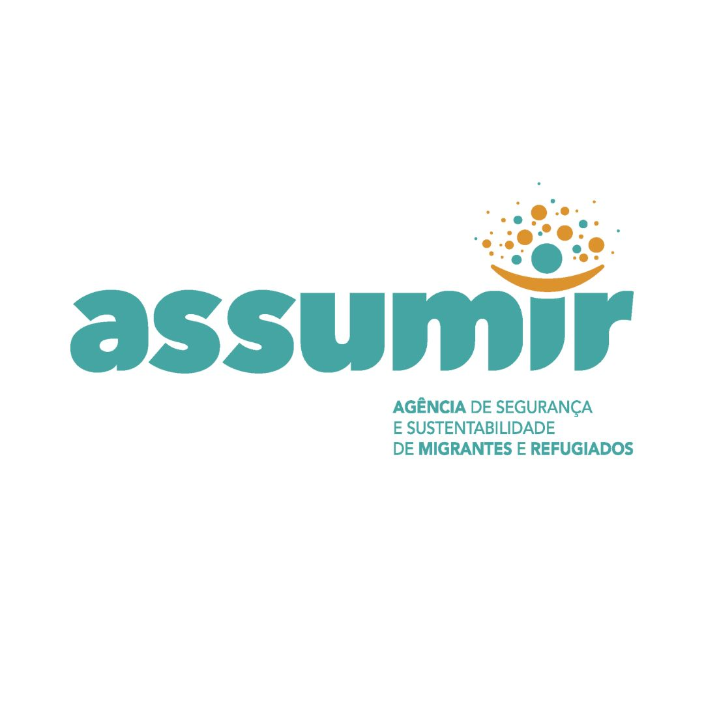

ASSUMIR
Nossa História
A Agência de Segurança e Sustentabilidade de Migrantes e Refugiados (ASSUMIR) é uma organização social e civil fundada em 2019 por Jonatas José de Pina e Simira Augusto Djata de Pina, ambos migrantes há mais de 6 anos no Brasil. A iniciativa nasceu da demanda por apoio a imigrantes e refugiados recém-chegados ao país, que enfrentavam dificuldades para obter documentos básicos (CPF, Carteira de Trabalho, RNE) e se inserir no mercado de trabalho.
Nossa Missão
Inspirar e apoiar migrantes e refugiados para que superem barreiras, encontrem dignidade e construam uma nova vida em segurança, promovendo uma sociedade mais inclusiva e empática.
Atuação
A ASSUMIR desenvolve projetos como o Migra Connection, que promove o acolhimento e integração de migrantes e refugiados por meio de uma rede de mentoria. Essa rede conecta voluntários brasileiros a migrantes para oferecer apoio nas áreas de empregabilidade, empreendedorismo, acesso a direitos e cultura local. Além disso, a ASSUMIR busca criar um impacto social duradouro, envolvendo também empresas e instituições públicas no fortalecimento da responsabilidade social e da gestão da diversidade.
Parceiros
Trabalhamos em conjunto com ONGs, empresas e instituições de ensino para potencializar o alcance e impacto de nossas ações, garantindo recursos e apoio necessário para nossos programas.